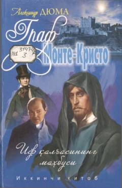

GMEdmon Dantesning qasos va adolat yo'lidagi hayajonli sarguzashtlari davomi.
Aleksandr Dyumaning ushbu mashhur romanida bosh qahramon Edmon Dantesning qasos olish yo'li va insoniy qadriyatlar tasvirlanadi. Asar adolat, sabr-toqat va umid kuchi haqida hikoya qiladi. Ushbu ikkinchi kitobda qahramonning o'z dushmanlariga qarshi kurashi va yakuniy yechimlar o'z aksini topgan.